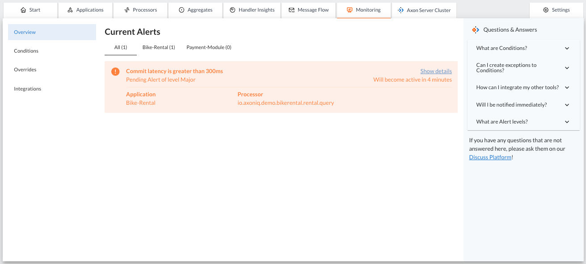
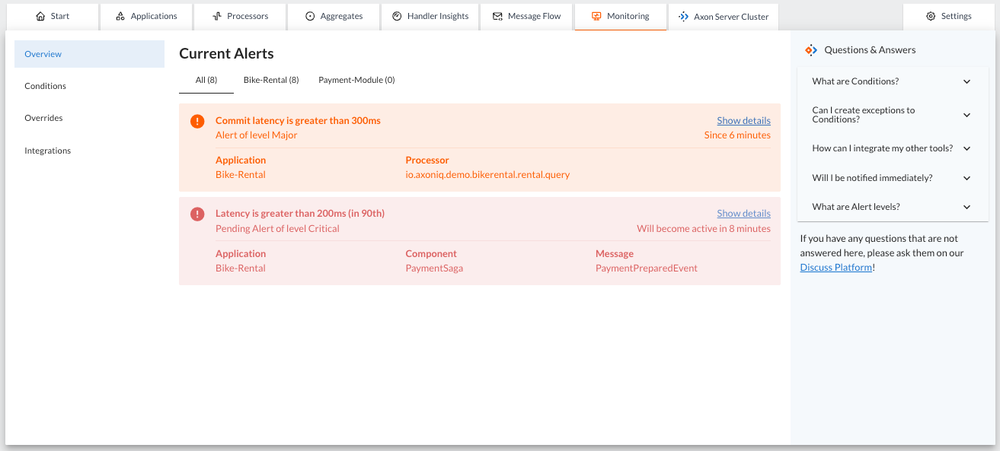
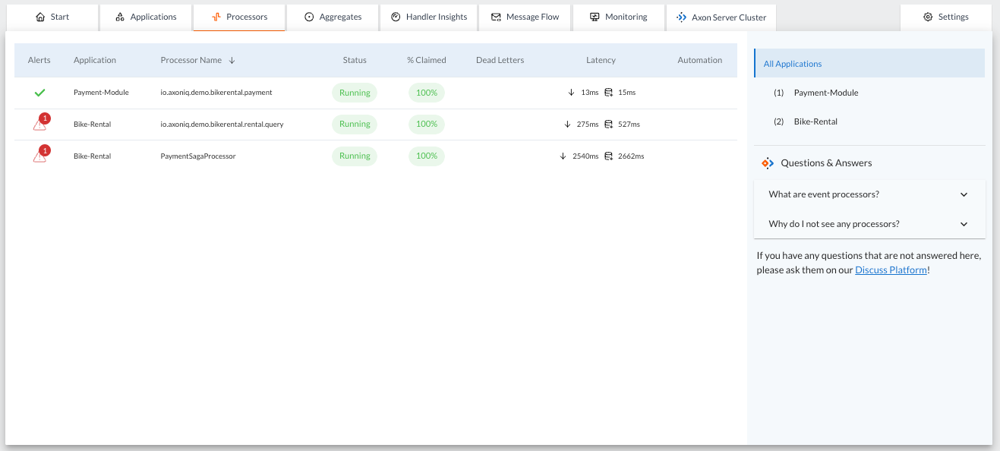
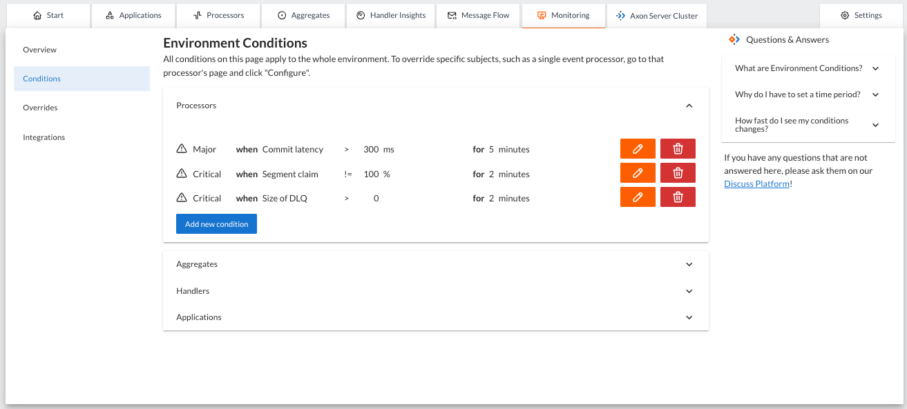
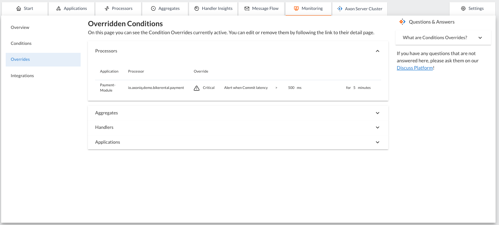

The Monitoring Tab
The Monitoring tab in AxonIQ Console contains information about alerts related to poor performance of your applications. This tab also allows you to configure the conditions that trigger these alerts.
On the left side of the panel, you can select different sections to display in the Monitoring tab: Monitoring, Conditions, Overrides, and Integrations.
Overview
The 'Overview' is the default option displayed when you access the Monitoring tab. The Overview displays a list of all performance alerts currently occurring in any of the applications connected to the AxonIQ Console.

When a specified condition is matched AxonIQ Console will create an alert and display it on this panel.
The alert is initially displayed as a warning with the status "Pending Alert". The alert will also indicate how much time it will take for the alert to become active if the performance does not return to within the limits defined by the alert Conditions.
If the observed values for that metric do not return to the accepted range, the alert will become active after the specified time and the panel will show for how long the problem was detected. You can configure this time when creating the condition. A higher value means less chance of false positives, but you will be notified later after detecting a metric has shifted away from its expected range.

|
These alerts are not only displayed in the 'Monitoring' tab. The 'Overview' section of this tab shows a summary of all detected alerts and also provides a link to view the details of these alerts. However, these alerts are also displayed in the form of warning or error icons on other tabs of the AxonIQ Console dashboard that display information corresponding to the components that are not performing well. Example of alerts for underperforming processors shown in the Processors tab
 |
Conditions
This option allows you to view and configure the various alerts and thresholds that will be monitored in the applications connected to the AxonIQ Console.

The alerts are grouped into four groups depending on the component for which the alert is defined: Processors, Aggregates, Handlers and Applications.
When you click on one of the groups, the panel displays the list of conditions that trigger an alert, along with two buttons to edit or delete the condition, and another button that allows you to define new conditions to trigger alerts under different performance conditions.
| The conditions defined in this section apply to all components and applications connected to that environment in the AxonIQ Console. You can also define more fine-grained conditions associated with a specific component using the Alerts panel in the detailed view of an application, processor, aggregate, or handler. |
Each condition is defined based on three properties:
-
The level, which represents the priority (or importance) of this alert. The level of the alert can be defined as
Incident,Critical,MajororMinor. -
The threshold condition, which defines the metric to be monitored and the threshold above which the alert is triggered. The condition consists of:
-
The metric to monitor. The list of possible metrics depends on the component for which the condition is defined.
-
The logical comparator used to evaluate the condition.
-
The threshold value beyond which the alert is triggered.
-
-
The duration in minutes that the condition must continue to occur before the alert is moved from `Pending' to `Active' status.
Consider the Pending status of an alert as a warning that something has started to deviate from the expected behavior.
|
Overrides
This panel displays the specific conditions defined to trigger alerts associated with a specific component (a specific processor, a specific aggregate, or a specific handler).
The conditions defined to trigger an alert associated with a specific component override the default conditions defined in the Conditions section.
The 'overrides' are grouped into four categories depending on the type of component they are associated with: applications, processors, aggregates or handlers:

|
The definition of the overrides (specific conditions to trigger an alert associated with specific components) is done clicking on the "Configure" button on the alerts panel at the details page of the application, processor, aggregate, or handler tabs |